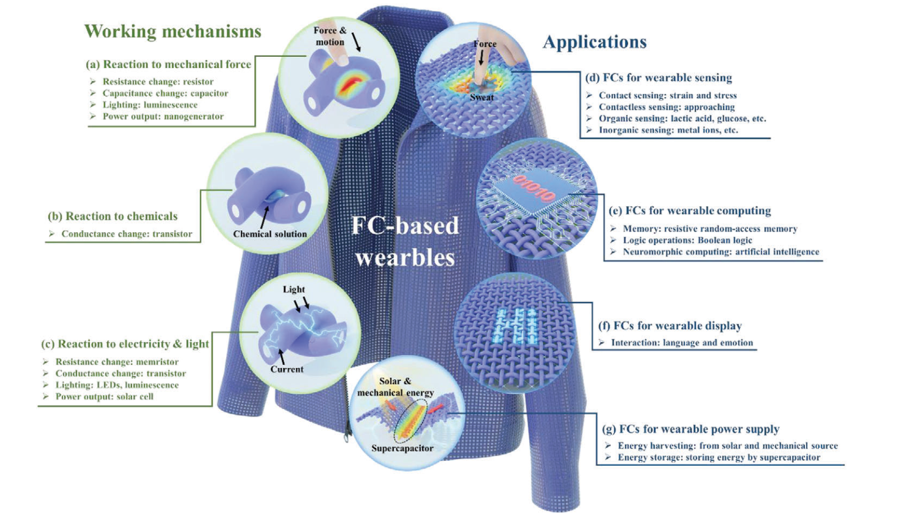
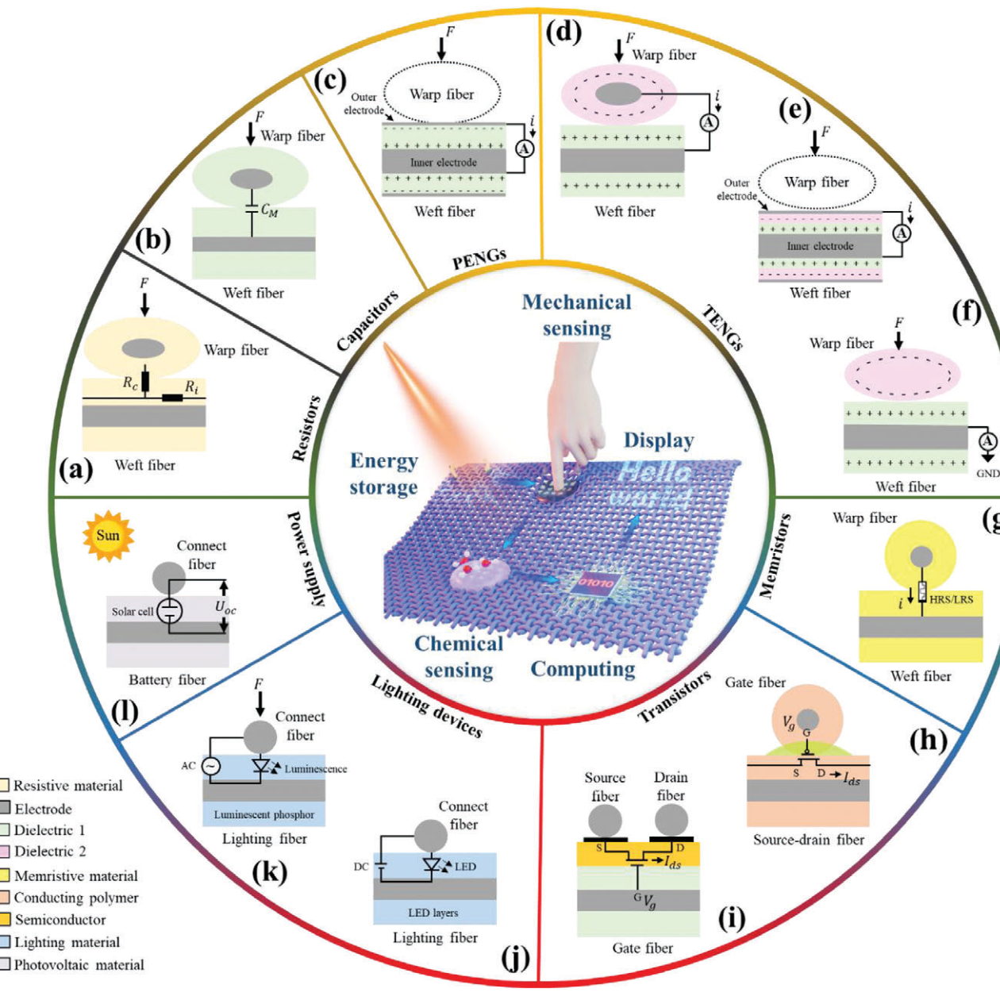
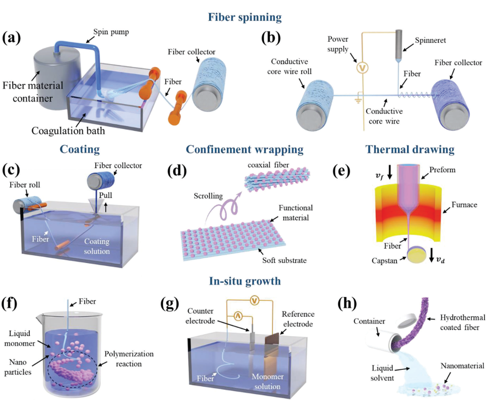
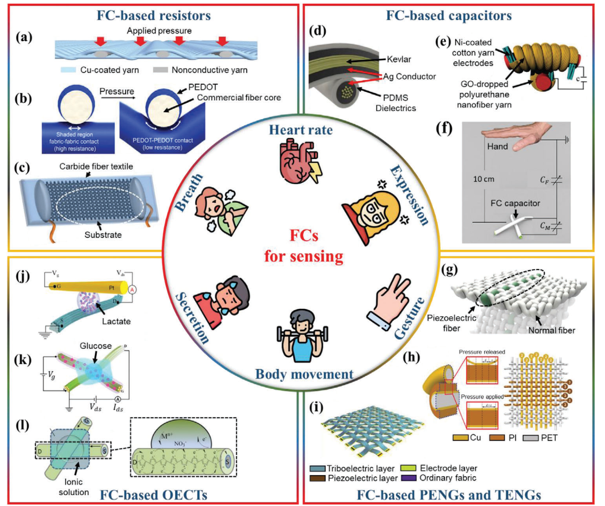
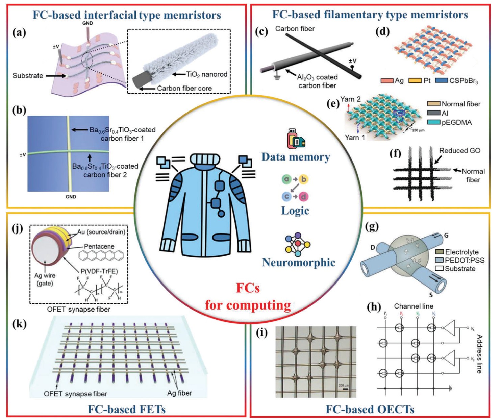
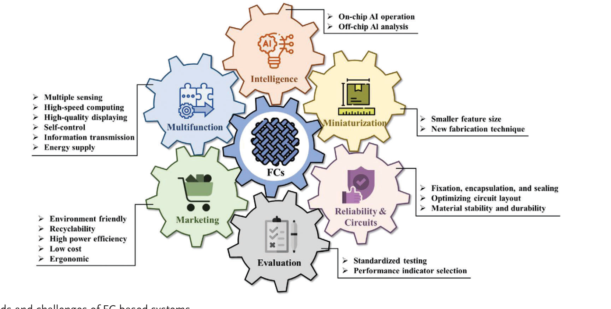

FIG. 1
总览：一个交叉点可响应力、化学、电与光
综述首先按输入机制与系统输出分类，建立后面全文的地图。

这篇综述提出“Fiber Crossbar（FC）”作为智能织物的统一架构语言：纤维是互连线，交叉点是器件，编织方式是电路拓扑。它把传感、存储、计算、显示与供能放到同一坐标系中，但这些功能来自不同研究原型，不能误读为已经出现了一块全功能织物计算机。
图像来自用户提供的原始论文 PDF，仅截取图体用于个人阅读并保留出处；不分发整篇 PDF。各综述图中引用的原始子图版权分别归相应论文作者与出版方。
综述把大量“功能纤维”工作重新按交叉点器件组织：交叉处的界面、夹层或局域电解质可以形成电阻、电容、压电/摩擦电发电机、忆阻器、OECT、FET、LED、发光单元和太阳能电池。二维织法天然提供行/列寻址和面积扩展，因此同一几何语言可覆盖感知、存储、神经形态计算、显示与能量管理。
综述首先按输入机制与系统输出分类，建立后面全文的地图。

功能取决于交叉处到底形成接触电阻、介电层、摩擦界面、电解质通道还是半导体结。

批量化能力往往由纤维制造决定；交叉点性能则受表面均匀性、包覆厚度和界面重现性限制。

四类器件各有不同的灵敏度—速度—稳定性权衡，不能用一个“超灵敏”标签概括。

综述把忆阻器、OECT 和 FET 阵列归到存储、逻辑与神经形态计算；这离“衣服自己完成 AI”还有明显系统鸿沟。

综述最后把技术挑战整理成六个齿轮，提醒读者不要只盯着“更多像素”。
